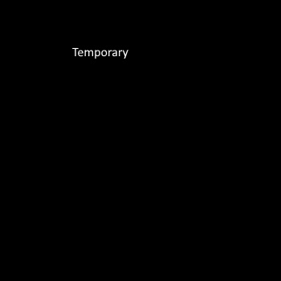

I'm Adin
I'm a full-stack software developer with interests in automation, UX, and information theory.
About me
Since I was young I've loved to take things apart to try and figure out how they went together.
I've always thought it was so cool that people were able to come up with these designs, and it made me want to try it out myself.
Interests
User Experience and Optimization are some of the most interesting aspects of computer programming to me.
Experience
I am currently enrolled in The Tech Academy’s Software Developer Boot Camp, and am learning a large variety of web and programming languages, including but not limited to
DHTML, SQL, C#, and Python.